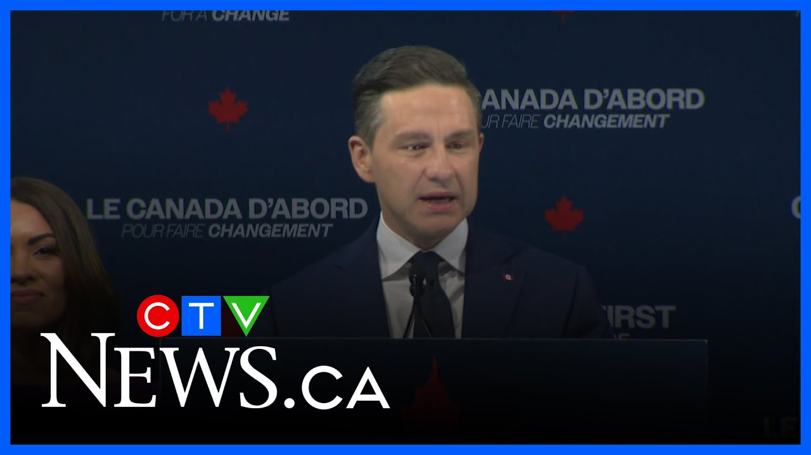

【皮埃尔·波利耶夫和贾格米特·辛格失去席位，伊丽莎白·梅成功连任】
Summary: Pierre Poilievre vows to remain Conservative leader despite losing his seat, while Jagmeet Singh steps down as NDP leader after the party loses official status; Elizabeth May secures re-election.
摘要： 皮埃尔·波利耶夫承诺继续担任保守党领袖，尽管失去席位；贾格米特·辛格在新民主党失去官方地位后宣布辞职；伊丽莎白·梅成功连任。

⏱️ Estimated Reading Time: 3 min
Pierre Poilievre is vowing to stay on as conservative leader after being defeated in his Carlton riding.
皮埃尔·波利耶夫承诺在卡尔顿选区失利后继续担任保守党领袖。
Poilievre lost the seat he's held for nearly two decades to Liberal candidate Bruce Fanjoy.
波利耶夫失去了他占据近20年的席位，败给自由党候选人布鲁斯·范乔伊。
Speaking before that result was confirmed, Poilievre said he would keep fighting for Canadians.
在该结果确认前，波利耶夫表示他会继续为加拿大人奋斗。
The promise that was made to me and to all of you is that anybody from anywhere could achieve anything.
对我及所有人的承诺是，任何地方的任何人都能有所成就。
That through hard work you could get a great life.
通过努力，你能过上美好生活。
You got to have a nice affordable home on a safe street.
你可以在安全的街道上拥有一个舒适且负担得起的家。
My purpose in politics is and will continue to be to restore that promise.
我的政治目标始终是恢复这一承诺。
The NDP lost official party status, falling to seven seats.
新民主党失去官方政党地位，席位降至七个。
Party leader Jagmeet Singh also lost his seat, telling supporters he is stepping down as leader as soon as an interim leader is appointed.
党领袖贾格米特·辛格也失去席位，并告诉支持者他将在临时领袖任命后辞职。
We had really good candidates that lost tonight.
我们今晚失去了许多优秀的候选人。
I know how hard you worked.
我知道你们付出了多少努力。
I spend time with you, you're amazing.
我与你们共处过，你们很棒。
I'm so sorry you're not going to be able to represent your communities.
很遗憾你们无法继续代表社区。
I know you're going to continue to fight for them.
我知道你们会继续为他们奋斗。
I know how many doors you knocked, how many family dinners you missed, how many nights your kids went to bed without you there to tuck them in.
我知道你们敲了多少门，错过了多少家庭晚餐，有多少夜晚孩子入睡时你们不在身边。
I know it was a tough sacrifice.
我知道这是艰难的牺牲。
And I just want to thank and we can give a round of applause to every single candidate that ran for us.
我只想感谢并为我们每一位参选人鼓掌。
Singh had held his seat since 2019.
辛格自2019年起一直占据该席位。
He finished third in the BC riding of Burnaby Central.
他在不列颠哥伦比亚省本拿比中央选区排名第三。
Another leader who was thought to be at risk of losing their seat, the Greens' Elizabeth May, managed to win her riding of Saanich-Gulf Islands.
另一位被认为可能失去席位的绿党领袖伊丽莎白·梅成功赢得萨尼奇-海湾群岛选区。
Marking the beginning of her fifth term.
标志着她第五个任期的开始。
It was the only seat for the Greens in this election.
这是绿党在此次选举中唯一的席位。
With May's co-leader Jonathan Pedneault unable to secure a win.
而梅的联合领袖乔纳森·佩德诺未能获胜。
May says she has received a phone call from Mark Carney congratulating her.
梅表示她收到了马克·卡尼的祝贺电话。
Who says she has known him for a few decades.
她说自己与他相识已有数十年。